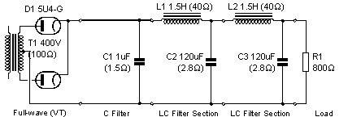
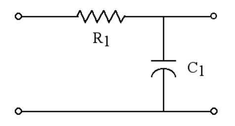
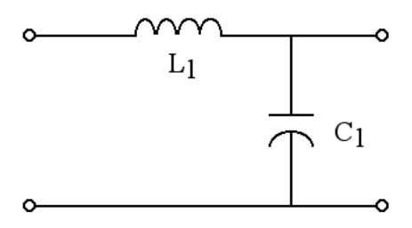

HiFi Audio Prive
<-- Back
Calculators
Library
Tube Amplifier Power Supply Smoothing Factors Calculations

RC Filter Stage
The RC filter stage is the simplest in operation of all the filter stages.
This stage simply acts as a frequency selective voltage divider where the shunt impedance is frequency dependent.
Consider the following simple diagram.

At DC the capacitor is going to act as an open circuit and the DC output voltage will be the equal to the input voltage minus the voltage drop in R1.
But what about the AC voltage (ripple)? At AC the capacitor has a finite reactance given by the following relation.
X
c
= 1 / (2 * Π * f * C)
Because we are using a full wave rectifier, the ripple frequency
fr is equal to two times the mains frequency
.
Using this information and the normal voltage divider relation, we can derive an equation for the smoothing factor
for this filter section. It is given in the following relation.
F
s
= (2 * Π * f * R * C) + 1
Calculate RC Filter
AC Power Line Frequency =
50 Hertz
60 Hertz
Rectifier Type =
Fullwave Rectifier
Halfwave Rectifier
Resistor =
Ohms
kOhms
Capacitor =
uF
Ripple reduction factor =
Ripple reduction factor in dB =
dBv
Two identical RC Filter Stages :
Read more about
Power Supply Design
for Vacuum Tube Amplifiers
LC Filter Stage
Fundamentally, this stage is very similar to the RC stage with the exception that the resistor has been replaced by an inductor.
However, the differences that this one change makes, are monumental.

The RC stage is called a "single pole" design. What this means is that its selectivity varies linearly with frequency.
The LC stage is a "two pole" design. This means that the selectivity of this stage varies with the square of frequency.
For this filter stage, the smoothing factor is as follows.
F
s
= (2 * Π * f)^2 * L * C - 1
Calculate LC Filter
AC Power Line Frequency =
50 Hertz
60 Hertz
Rectifier Type =
Fullwave Rectifier
Halfwave Rectifier
Inductor =
H
Capacitor =
uF
Ripple reduction factor =
Ripple reduction factor in dB =
dBV
*
Two identical LC Filter Stages :
*
dBV is dB relative to 1.0 volt; such that 0dBV = 1.0 volt.
Read more about
Power Supply Design
for Vacuum Tube Amplifiers
<<< Back
©
mh-Audio.nl -
Disclaimer